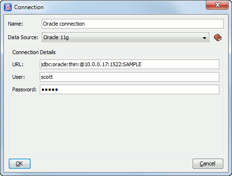

Data Sources Preferences
To configure the Data Sources preferences, open the Preferences dialog box and go to Data Sources. This preferences page allows you to configure data sources and connections to relational and native XML databases. For a list of drivers that are available for the major database servers, see Download Links for Database Drivers.
Connection Wizards Section
- Create eXist-db XML connection
- Click this link to open the dedicated Create eXist-db XML connection dialog box that provides a quick way to create an eXist connection.
Data Sources Section
This section allows you to add and configure data sources.
- New
-
Opens the Data Sources Drivers dialog box that allows you to configure a new database driver.
Figure 2. Data Sources Drivers Dialog Box The following options are available in the Data Source Drivers dialog box:- Name - The name of the new data source driver that will be used for creating connections to the database.
- Type - Selects the data source type from the supported driver types.
- Help button - Opens the User Manual at the list of the sections where the configuration of supported data sources is explained and the URLs for downloading the database drivers are specified.
- Driver files (JAR, ZIP) - Lists download links for database drivers that are necessary for accessing databases in Oxygen XML Editor.
- Add Files - Adds the driver class library.
- Add Recursively - Adds driver files recursively.
- Remove - Removes the selected driver class library from the list.
- Detect - Detects driver file candidates.
- Stop - Stops the detection of the driver candidates.
- Driver class - Specifies the driver class for the data source driver.
 Edit
Edit- Opens the Data Sources Drivers dialog box for editing the selected driver. See above the specifications for the Data Sources Drivers dialog box. To edit a data source, there must be no connections using that data source driver.
 Duplicate
Duplicate- Creates a copy of the selected data source.
 Delete
Delete- Deletes the selected driver. To delete a data source, there must be no connections using that data source driver.
Connections Section
This section allows you to add and configure data source connections.
- New
-
Opens the Connection dialog box that allows you to configure a new database connection.
Figure 4. Connection Dialog Box The following options are available in the Connection dialog box:- Name - The name of the new connection that will be used in transformation scenarios and validation scenarios.
- Data Source - Allows selecting a data source defined in the Data Source Drivers dialog box.
Depending upon the selected data source, you can set some of the following parameters in the Connection details area:- URL - The URL for connecting to the database server.
- User - The user name for connecting to the database server.
- Password - The password of the specified user name.
- Host - The host address of the server.
- Port - The port where the server accepts the connection.
- XML DB URI - The database URI.
- Database - The initial database name.
- Collection - One of the available collections for the specified data source.
- Environment home directory - Specifies the home directory (only for a Berkeley database).
- Verbosity - Sets the verbosity level for output messages (only for a Berkeley database).
- Use a secure HTTPS connection (SSL) - Allows you to establish a secure connection to an eXist database through the SSL protocol.
- Edit
- Opens the Connection dialog box, allowing you to edit the selected connection. See above the specifications for the Connection dialog box.
- Duplicate
- Creates a copy of the selected connection.
- Delete
- Deletes the selected connection.
 Move
Up
Move
Up- Moves the selected connection up one row in the list.
 Move
Down
Move
Down- Moves the selected connection down one row in the list.
- Limit the number of cells
- For performance issues, you can set the maximum number of cells that will be displayed in the Table Explorer view for a database table. Leave this field empty if you want the entire content of the table to be displayed. By default, this field is set to 2000. If a table that has more cells than the value set here is displayed in the Table Explorer view, a warning dialog box will inform you that the table is only partially shown.
- Maximum number of children for container nodes
- In Oracle XML, a container can hold millions of resources. If the node corresponding to such a container in the Data Source Explorer view would display all the contained resources at the same time, the performance of the view would be very slow. To prevent this, only a limited number of the contained resources is displayed as child nodes of the container node. You can navigate to other contained resources from the same container by using the Up and Down buttons in the Data Source Explorer view. This limited number is set in the field. The default value is 200 nodes.